File: 000240.gt.txt (if the image is defective, simply delete all Arabic text and the line will be excluded)
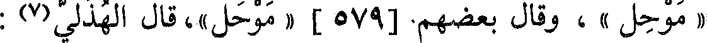
« موحل » ، وقال بعضهم[579] « موحل »،قال الهذلي(7) :
File: 000241.gt.txt (if the image is defective, simply delete all Arabic text and the line will be excluded)
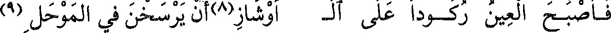
فأصبح العين ركودا على ال أوشاز(8) أن يرسخن في الموحل(9)
File: 000242.gt.txt (if the image is defective, simply delete all Arabic text and the line will be excluded)
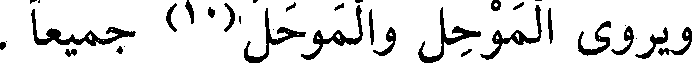
ويروى الموحل والموحل(10) جميعا .
File: 000243.gt.txt (if the image is defective, simply delete all Arabic text and the line will be excluded)
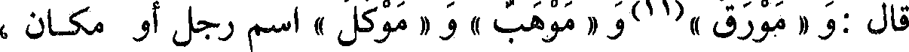
قال : و« مورق »(11) و« موهب » و« موكل » اسم رجل أو مكان ،
File: 000244.gt.txt (if the image is defective, simply delete all Arabic text and the line will be excluded)
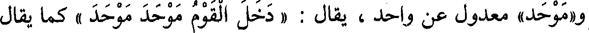
و«موحد» معدول عن واحد ، يقال : « دخل القوم موحد موحد » كما يقال
File: 000245.gt.txt (if the image is defective, simply delete all Arabic text and the line will be excluded)
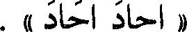
« أحاد أحاد » .
File: 000246.gt.txt (if the image is defective, simply delete all Arabic text and the line will be excluded)
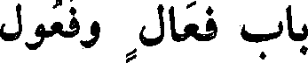
باب فعال وفعول
File: 000247.gt.txt (if the image is defective, simply delete all Arabic text and the line will be excluded)
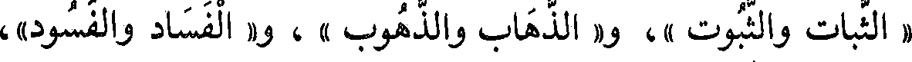
« الثبات والثبوت » ، و« الذهاب والذهوب » ، و« الفساد والفسود» ،
File: 000248.gt.txt (if the image is defective, simply delete all Arabic text and the line will be excluded)
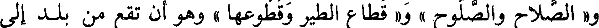
و« الصلاح والصلوح » و« قطاع الطير وقطوعها » وهو أن تقطع من بلد إلى
File: 000249.gt.txt (if the image is defective, simply delete all Arabic text and the line will be excluded)
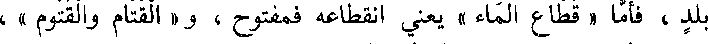
بلد، فأما « قطاع الماء » يعني انقطاعه فمفتوح ، و « القتام والقتوم » ،
File: 000250.gt.txt (if the image is defective, simply delete all Arabic text and the line will be excluded)
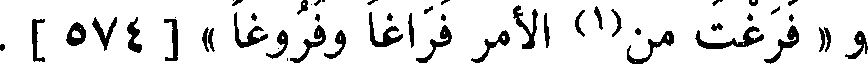
و « فرغت من(1) الأمر فراغا وفروغا» [574] .
File: 000251.gt.txt (if the image is defective, simply delete all Arabic text and the line will be excluded)
باب فعال وفعول
File: 000252.gt.txt (if the image is defective, simply delete all Arabic text and the line will be excluded)
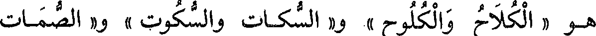
هو «الكلاح والكلوح » و« السكات والسكوت » و« الصمات
File: 000253.gt.txt (if the image is defective, simply delete all Arabic text and the line will be excluded)
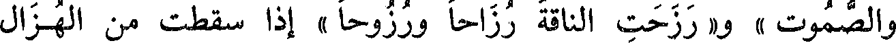
والصموت » و«رزحت الناقة رزاحا ورزوحا» إذا سقطت من الهزال
File: 000254.gt.txt (if the image is defective, simply delete all Arabic text and the line will be excluded)
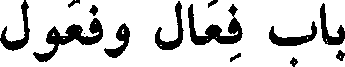
باب فعال وفعول
File: 000255.gt.txt (if the image is defective, simply delete all Arabic text and the line will be excluded)
والتعب .
File: 000256.gt.txt (if the image is defective, simply delete all Arabic text and the line will be excluded)
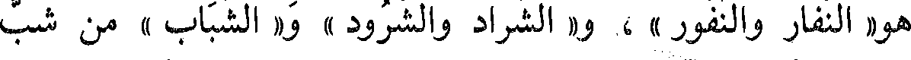
هو« النفار والنفور » ، و« الشراد والشرود » و« الشباب » من شب
File: 000257.gt.txt (if the image is defective, simply delete all Arabic text and the line will be excluded)
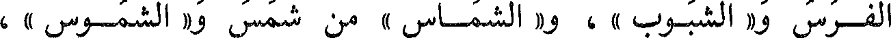
الفرس و« الشبوب » ، و« الشماس » من شمس و « الشموس » ،
File: 000258.gt.txt (if the image is defective, simply delete all Arabic text and the line will be excluded)
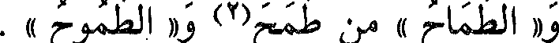
و« الطماح » من طمح(2) و«الطموح » .
File: 000259.gt.txt (if the image is defective, simply delete all Arabic text and the line will be excluded)
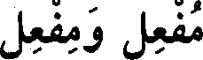
مفعل ومفعل
File: 000260.gt.txt (if the image is defective, simply delete all Arabic text and the line will be excluded)
قالوا: « منتن » و« منتن » بكسر الميم ؛ لا يعرف{1O غيره فمن(2)
File: 000261.gt.txt (if the image is defective, simply delete all Arabic text and the line will be excluded)
أخذه من أنتن قال(3) : منتن ، ومن أخذه من نتن قال(3) منتن .
File: 000262.gt.txt (if the image is defective, simply delete all Arabic text and the line will be excluded)
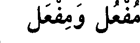
مفعل ومفعل
File: 000263.gt.txt (if the image is defective, simply delete all Arabic text and the line will be excluded)
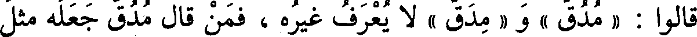
قالوا : « مدق » و« مدق » لا يعرف غيره ، فمن قال مدق جعله مثل
File: 000264.gt.txt (if the image is defective, simply delete all Arabic text and the line will be excluded)
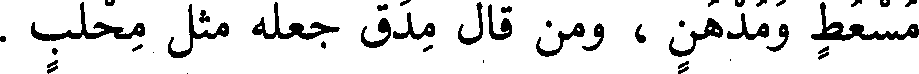
مسعط ومدهن ، ومن قال مدق جعله مثل محلب .
File: 000265.gt.txt (if the image is defective, simply delete all Arabic text and the line will be excluded)
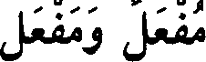
مفعل ومفعل
File: 000266.gt.txt (if the image is defective, simply delete all Arabic text and the line will be excluded)
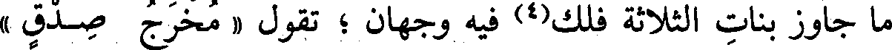
ما جاوز بنات الثلاثة فلك(4) فيه وجهان ؛ تقول « مخرج صدق »
File: 000267.gt.txt (if the image is defective, simply delete all Arabic text and the line will be excluded)
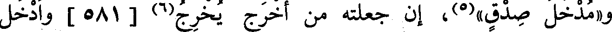
و«مدخل صدق»(5)، إن جعلته من أخرج يخرج(6) [581] وأدخل
File: 000268.gt.txt (if the image is defective, simply delete all Arabic text and the line will be excluded)
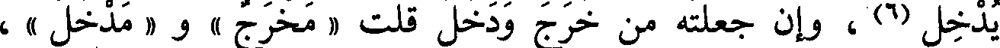
يدخل(6) ، وإن جعلته من خرج ودخل قلت « مدخل » و« مخرج » ،
File: 000269.gt.txt (if the image is defective, simply delete all Arabic text and the line will be excluded)
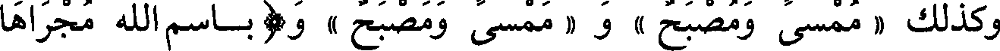
وكذلك « ممسى ومصبح » و« ممسى ومصبح » و( باسم الله مجراها
To Save: `Ctrl+s`, make sure to choose `Webpage, complete`!